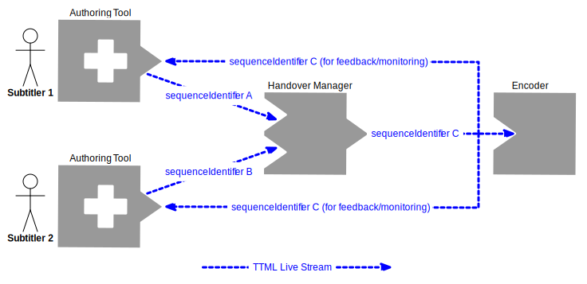

This specification defines constraints and extensions to TTML
to support the contribution
of real time streams of content,
primarily subtitles and captions,
from an authoring or playout system
via a controlled network
to an encoder
whose output is intended for wider distribution.
It also defines a system model including nodes,
sequences and streams useful for modelling
such systems.
The primary use case is the transfer of
live subtitles and captions
within a broadcast or media preparation
environment.
This document is derived from the [[EBU-TT-Live-1-0]]
where some informative information has been removed, and
the normative requirements have been re-based on [[TTML1]]
where in the original they were based on the [[EBU-TT-1-2]]
profile of TTML1.
The extensions and constraints defined in this
specification are usable with both [[TTML1]] and [[TTML2]].
No constraints added to [[TTML2]] invalidate the extensions
and constraints specified herein.
No requirement is presented here for any
subtitle presentation device used by an audience member
to behave differently in the presence of live subtitles
compared to prepared subtitles:
rather, it is envisaged that any processing required
to manage the two cases,
and the transitions between them,
occurs in the broadcaster domain.
However the use of SMPTE time code is not supported.
These extensions are based on [[EBU-TT-Live-1-0]]
developed by EBU and
benefit from technical consensus and implementation experience
gathered there.
Scope
This specification defines extensions to TTML
to support the contribution
of real time streams of content,
primarily subtitles and captions,
from an authoring or playout system
via a controlled network
to an encoder
whose output is intended for wider distribution.
The primary use case is the transfer of
live subtitles and captions
within a broadcast or media preparation
environment.
These extensions are designed to support direct contribution
of streams of TTML in the absence of any other data structure that might
provide additional semantics, or to work within such other structures.
This document describes how [[TTML1]]
(and by extension [[TTML2]] and
non-conflicting derived profiles of either)
can be used in a broadcasting environment
to carry subtitles and captions that are created
in real time ("live" or from a prepared file)
from an authoring station
to an encoder
prior to distribution,
via intermediate processing units.
It does this by specifying:
a system model consisting of processing nodes
that pass streams of subtitles along a chain;
a content profile specifying the data format of each document
in a live subtitle stream;
a mechanism by which content providers can
model and potentially improve synchronisation
between the subtitles and the audio to which they relate;
a mechanism for interoperable management of the
handover from one subtitler to the next,
to generate a single output subtitle stream.
an extension facility to allow other types of
live documents to be defined in future specifications,
for example for passing messages between subtitlers.
The mechanisms by which such streams of TTML are carried are out of
scope of this document; however the requirements for any specification
of such a mechanism are included.
Normative text describes indispensable or mandatory elements.
It contains the conformance keywords ‘shall’,
‘should’ or ‘may’, defined as follows:
Shall
and
shall not:
Indicate requirements to be followed strictly
and from which no deviation is permitted
in order to conform to the document.
Should
and
should not:
Indicate that, among several possibilities,
one is recommended as particularly suitable,
without mentioning or excluding others;
OR indicate that a certain course of action is
preferred but not necessarily required;
OR indicate that (in the negative form)
a certain possibility or course of action
is deprecated but not prohibited.
May
and
need not:
Indicate a course of action permissible
within the limits of the document.
Default
identifies mandatory (in phrases containing “shall”)
or recommended
(in phrases containing “should”) presets that can,
optionally, be overwritten by user action
or supplemented with other options in advanced applications.
Mandatory defaults must be supported.
The support of recommended defaults is preferred,
but not necessarily required.
Informative text is potentially helpful to the user,
but it is not indispensable
and it does not affect the normative text.
Informative text does not contain any conformance keywords.
A conformant implementation is one which
includes all mandatory provisions (‘shall’)
and, if implemented,
all recommended provisions (‘should’) as described.
A conformant implementation need not implement
optional provisions (‘may’)
and need not implement them as described.
Introduction
The topic of live subtitle or caption authoring,
routing and encoding is large.
Organisations such as broadcasters,
access service providers and other content providers
face a variety of challenges ranging from the editorial,
for example word accuracy and rate, to the technical,
for example how the text data is routed from the author to the encoder,
what format it should be in and how it can be configured and monitored.
The classical way to address such a large “problem space” is
to divide it up into more easily solvable constituent parts.
This approach is taken here.
This document also provides useful options for
mixing the play out of prepared subtitle documents and live subtitles,
a problem that arises for all broadcast channels
whose output is not either 100% pre recorded or 100% live.
Authoring conventions,
for example the use of colour to identify speakers,
are not directly addressed in this document;
however care has been taken to ensure that
the technical solutions presented here
can support a variety of conventions.
System setup,
configuration,
management,
resilience,
monitoring
and recovery
are likewise addressed indirectly
by modelling the potential architectures in the abstract
and designing the data format to support those architectures.
TTML as an exchange format for live and prepared subtitles.
TTML and profiles such as [[ttml-imsc1.1]] are intended for general use
in exchanging prepared subtitles and captions.
This workflow is extended by this document to include exchange of
live subtitles and captions.
Notwithstanding that primary intent,
this specification may be applied to any application of
TTML that is compatible with delivery in temporal fragments.
Summary of key points
The content is carried in sequences of Document Instances.
In addition to the text it can contain styling, layout, timing and
additional metadata information.
Each document instance indicates the sequence to which it belongs
using a Sequence Identifier. The order is set by a
Sequence Number.
The concept of sequence identification is separate to
service identification.
Document metadata may be used to allow authors to
identify the services for which
the sequence is intended to carry subtitles,
also known as the broadcast channel etc.
Sequences of live documents are transferred between
Nodes.
Such transfers are called
Streams.
Nodes can consume, process and/or output Documents.
Different types of Node can send or receive varying numbers of
Streams to or from other Nodes.
Some examples are shown below.
Processing Nodes
output sequences that differ or may differ from those at the input.
An authoring station or a spellchecker are examples of processing nodes.
Passive Nodes
simply receive and optionally pass on sequences
from input to output without modifying
the content of any document in the sequence.
A distributing node or an encoder are examples of passive nodes.
Documents can use different types of timing.
Only one Document can be active at any given time.
If different Documents overlap in time,
the Document with the highest Sequence number ‘wins’.
When a document includes explicit times using the
begin, end or dur
attributes, and is available before its begin time,
it becomes active
at its begin time,
until the next document is active,
or it reaches its end.
Documents may be sent before they become active;
documents may be re evaluated later,
for example to archive a corrected version of
the subtitles after broadcast,
or to retain precise timings from source documents.
If no begin or end attributes
are set in the Document,
subtitles will be active as soon as they are received,
until the next Document is active or the dur
on the body element has been reached, if set.
The typical use case is sending subtitles as fast as possible
for live subtitling.
This simple scheme may not be optimal,
because it does not support all the possible use cases,
for example creating archive versions is more difficult.
Schematic of use case showing an authoring tool
generating a stream of TTML Live subtitles.
illustrates a simple example use case
in which a subtitler uses an authoring tool
to create a stream of live subtitles.
Those are then transferred either:
via a direct IP connection to an Improver
and then on to an encoder; or
embedded into an audio/visual stream with an inserter
and then de-embedded for passing to an encoder.
A potential addition to this workflow would be
an additional connection
for example from the Improver to an Archiver to create an
archive [[TTML1]] document for later reuse.
The Improver defined in this document is a processing node that could,
for example, insert a defined compensating delay,
check content for correct spelling,
ensure that prohibited code points are not propagated or
perform other transformations to generate output suitable for encoding.
Example scenarios
The following examples represent typical real world scenarios
in which documents and nodes that conform to this specification
can be used.
Handover orchestration
Each subtitler in a group authors subtitles
for part of a single programme;
each group member takes a turn to contribute
for a period of time before handing over to the next subtitler.
Each subtitler creates a distinct sequence of subtitles for their turn.
Each of those input sequences has a different sequence identifier.
The authoring stations emit the sequences as streams.
As part of an externally orchestrated handover process
a handover manager node receives all the streams,
combines them and emits a new continuous stream.
This new output stream’s sequence has a different sequence identifier
from each of the input sequences.
Incidentally, each subtitler may subscribe to,
and view the others’ streams to assist with the handover orchestration.
Author and correct
A pair of subtitlers authors and corrects live subtitles.
The first subtitler creates a sequence using an authoring tool.
The second subtitler receives a stream of that sequence and
manipulates an Improver Node that allows the sequence
to be modified and then issues a new sequence
with a different sequence identifier from the input sequence,
for consumption downstream.
Timing improvement
An Improver Node receives a stream and
a continuous audio track in a reference time frame.
The Improver analyses the audio and subtitles and
creates a new sequence whose contents are
time aligned relative to the audio track’s time frame,
using time stamps from a common clock source.
The new sequence is issued as a stream with a new sequence identifier.
Retrospective Corrections
A subtitler authors a live subtitle stream whose sequence
is archived for later reuse.
On noticing an error the subtitler issues
a retrospectively timed correction.
The archive process uses data within the sequence
to apply the correction such that
the error it corrects is not apparent
within the generated archive document.
Terms and Definitions
Author
a person or system that creates a stream
of live subtitle data based on observations of some other media,
for example by listening to a programme audio track.
Captions and subtitles
The term “captions” describes on screen text for use
by deaf and hard of hearing audiences.
Captions include indications of the speakers and relevant sound effects.
The term “subtitles” describes on screen text for translation purposes.
For easier reading only the term “subtitles” is used
in this specification as the representation of captions and subtitles
is the same here.
In this specification the term “captions” is used
interchangeably with the term “subtitles” (except where noted).
Carriage Mechanism
a mechanism by which physical streams may be transferred between
nodes.
Document
A subtitle document conformant to this specification.
Document availability time
The time when a document becomes available for processing.
Document cache
The set of documents retained by a node, for example for processing.
Document resolved begin time
The time when a document becomes active during a presentation.
This term is used in the same sense as "resolved begin time" is used
in [[SMIL3]],
when applied to a document and is further defined in
.
Document resolved end time
The time when a document becomes inactive during a presentation.
This term is used in the same sense as "resolved end time" is used in
[[SMIL3]] when applied to a document and is further defined in
.
Encoder
a system that receives a stream of live subtitle data
and somehow encodes it into a format suitable for use downstream,
for example EBU-TT-D.
Some encoders may also package the encoded output data into
other types of stream e.g. MPEG DASH.
Inserter
A unit that embeds subtitle data into an audio/visual stream.
This is in common use in current subtitling architectures.
Live Document
Any entity defined to be a Live Document by a W3C specification,
including all Documents defined in this specification.
Node
A unit that creates, emits, receives
or processes one or more sequences.
Node identifier
The unique identifier of a Node.
Presentation
In this document the term 'presentation' is used in
the sense in which it is used in [[SMIL3]].
Presentation processor. See Section 2.2 at [[!ttml2]].
Transformation processor. See Section 2.2 at [[!ttml2]].
Processing Context
The configuration and operating parameters of
a node that processes a document.
Root Temporal Extent
As defined in [[!TTML1]].
Sequence
A set of related live documents
each of which shares the same sequence identifier,
for example the documents that
define the subtitles for a single programme.
Sequence Begin
The start of the interval in which
a sequence is presented is referred to as the sequence begin.
Equivalent to the document begin [[SMIL3]] of
the first document in the sequence.
Sequence End
The end of the interval in which
a sequence is presented is referred to as the sequence end.
Equivalent to the document end [[SMIL3]] of
the last document in the sequence.
Sequence Duration
The difference between the
sequence end
and the
sequence begin is referred to as the sequence duration.
Service identifier
An identifier used to uniquely identify a broadcast service,
for example the HD broadcast of the broadcaster’s main channel.
Stream
The transfer of a sequence between two nodes.
TTML Live document
A live document that is a valid TTML document instance.
System Model
This section defines an abstract system model;
systems that are conformant with this specification
shall meet the requirements within the system model
,
and .
Documents
A document is a single entity conformant to this specification.
An implicitly timed document is
a document that contains no timing information
and is considered active as soon as it has become available.
It may also express a maximum duration
after which it shall be deactivated.
An explicitly timed document is
a document that contains timing information
and whose activation time depends both on
when it has become available
and the timing information that it contains,
resolved using its time base and a reference clock source.
When presenting a sequence of documents,
at each moment in time
exactly zero or one document
shall be active.
If no document is active,
or if a document with no content is active,
no content shall be displayed.
Two document instances are considered
identical if
the result of the fn:deep-equal function
[[xpath-functions-30]] is true
when both document instances are provided as operands.
For valid serialised XML documents
if a byte comparison of the two documents shows
they are identical then deep-equal
is expected also to return true,
however there are cases where serialisations
are not identical in a byte comparison but
deep-equal correctly reports that
they are identical,
for example if XML comments have been added
or attributes have been reordered.
Sequences shall be considered distinct
if they have had processing applied,
even if the result of that processing is
no change other than a known difference in quality,
for example if the processing has
checked the spelling of the text content.
Sequences do not have an explicit existence
other than being the set of their constituent live documents;
the sequence identifier
shall be present within every document
in order to make concrete the association with the
document's sequence.
Every document shall contain a sequence number.
Sequence numbers shall increase with the passage of time
for each new document that is made available.
Sequence numbers are used to resolve temporal overlaps:
see .
In case a document is received with
the same sequence identifier
and sequence number as a previously received document
the later received document shall be discarded from processing.
If sequence numbers begin at 1 then,
at an example nominal mean rate of 1 document per second
the maximum sequence number that will fit within a 4 byte
unsigned integer corresponds to a sequence duration of
over 136 years.
Nevertheless sequences should begin at low sequence numbers
such as 1 to avoid the possibility of an
unwanted integer overflow.
Every document in a sequence is by definition a valid
and self contained document conforming to this specification.
In general no knowledge of other documents
is required to process it.
Some specific kinds of processor may constitute exceptions,
such as one that accumulates multiple documents together
and combines them into a single one.
For the purposes of efficiency,
a processing node may store the preceding document
for document comparison,
e.g. when a subsequent document only changes
the temporal validity of the document content.
Sequences may be stored:
that is, the lifetime of the sequence is unbounded.
Every document in a sequence
shall have the same timing model
as defined by using the same set of
specified or absent values for the
ttp:timeBase
and ttp:clockMode attributes.
Nodes and streams
A node is a TTML Live aware unit or mechanism that creates,
emits, receives or processes one or more sequences.
Any number of nodes may process
or consume the same logical stream:
by definition the delivery of those streams requires
one physical stream per destination node.
There can be little or no observable difference in content
but the processing node has the potential to modify
the output stream;
for example a spell checker
or profanity removal node might
not make any changes most of the time
but be called into action on an occasional basis.
Nevertheless the output is considered
to be different from the input
because it has a logically different state,
for example if it is known not to contain any profanities,
and it is required to have a different sequence identifier.
A passive node shall not modify input sequences
and shall only emit sequences that are identical
(including the sequence numbers)
to the input sequence(s),
for example nodes that are simply used for switching.
A consumer node is a specialised passive node
that does not emit any sequence.
Streams are transient:
that is, the lifetime of a stream is bounded by
the period between the start of transfer
(when the first document is transferred)
and the end of transfer (when the last document is transferred).
Streams may begin before the last document in the sequence
has been generated - indeed it is envisaged that
in normal operation documents within a sequence
are generated dynamically
and transferred in a stream with an undefined end time.
The flow of a stream is unidirectional.
Any ‘back channel’ reverse communication
is external to the payload of the sequence.
At any moment in the presentation
of a sequence by a node
exactly zero or one document
in that sequence shall be temporally active.
The logic defining which document is temporally active
is defined in .
Nodes are defined as abstract classes.
Further detail of node behaviour is defined in
.
See also .
For correct temporal processing of streams,
nodes are expected to maintain synchronisation between
internal clocks used to compare documents’ availability times
with the computed times for the documents’ contents.
The use of SMPTE time base is prohibited.
This is because the combination of
ttp:timeBase="smpte" and
ttp:markerMode="discontinuous"
implies that time expressions are merely markers
that cannot be relied upon to increase monotonically.
Therefore they are unsuitable for direct comparison purposes,
which is a processing requirement
for identifying temporal overlaps between documents.
In practice any source of SMPTE timecode,
for example timecode associated with video frames,
even if intended to be continuous,
can be subject to discontinuities
for example at programme boundaries.
Techniques for working around the absence
of SMPTE time base are described in
.
shows a UML class model
illustrating the logical entities in this system model.
UML model showing system model logical entities
It is envisaged that some processing nodes
will be purely software whereas others require human intervention.
Sequence identifiers should not
be used as service identifiers,
such as broadcast television channel identifiers.
For example consider the case of a ‘simulcast’
where a single video source is broadcast
on more than one output service simultaneously,
perhaps to support localised services or
both standard definition
and high definition video services,
with the same audio.
A subtitler can only observe
a single media source at any moment,
and generates a single sequence with
a single sequence identifier,
which could be subsequently processed,
generating new sequences with different identifiers.
Those sequences could be destined
to be encoded for multiple output or destination services.
Destination service identifiers may be carried
as metadata within documents.
Similarly the observed source service identifier
may be carried as metadata within documents.
Other live documents
The definition of sequence deliberately allows for
the possible future introduction of other kinds of
TTML Live document
than the document type specified here.
Implementations of TTML Live nodes should be designed
to accommodate other live documents.
Timing and synchronisation
This section defines the temporal processing
of a sequence of documents within a presentation,
the management of delay in a live authoring environment
and the use of reference clocks.
Document resolved begin and end times
Every document in a sequence has
a time period during which it is active
within a presentation, defined in [[TTML1]] as the
Root Temporal Extent.
At any single moment in time during the presentation
of a sequence either zero documents
or one document shall be active.
The period during which a document is active
begins at the document resolved begin time
and ends at the document resolved end time.
It is not necessary for all classes of processor
to resolve the document begin and end times.
For example a processing node that
checks text spelling only can do so
without reference to the timing constructs defined in this section.
Definition of time values used for
resolving document begin and end times
The rules for determining resolved begin and end times
in this section require comparison of times
that are potentially derived from different clock sources.
For example the availability time of a document
can be found by inspecting a local system clock whereas
the earliest computed begin time in the document
can be in a timebase relating to a different reference clock.
For the purpose of making these comparisons
the following times shall be converted
to values on the same timebase:
any externally specified document deactivation time.
The earliest computed begin time is defined as
the earlier of
a) the earliest computed begin time of any leaf element in the document
and b) the earliest computed time corresponding to
a specified begin attribute value on an element
that either has no end attribute
or has an end attribute value that is
later than the begin attribute value.
In the case that a root to leaf path contains
elements all of which omit a begin attribute value
this evaluates to the value zero on the document’s timebase.
The latest computed end time is defined as
the latest computed end time corresponding to
a specified end attribute value on an element
that either has no specified begin attribute
or has an end attribute value that is
later than the begin attribute value.
In the case that a root to leaf path contains
elements all of which omit an end attribute
this evaluates to the [[SMIL3]] term "undefined",
that is the latest computed end time is not determined,
and is effectively infinite for comparison purposes.
It is syntactically permitted for an element
to have a begin attribute value that is
later than or equal to its end attribute value;
in this case normally the element would be considered
never to be active;
this is why such elements are excluded
from the calculation of the
earliest computed begin time
and the latest computed end time.
See [[EBU-TT-Live-1-0]] Annex C for informative worked examples.
Behaviour when no document is active
When no document is active a presentation processor
shall not render any content.
An encoder can be considered to be a specialised type
of presentation processor.
More generally, this applies to any consumer node.
Delay nodes
An Improver Node that applies an adjustment delay
is referred to as a
Delay Node.
The adjustment delay applied is known as the
offset period.
It is out of scope of this document
to mandate the use of specific techniques
for deriving the offset period;
furthermore it is expected that
the relative success of these techniques
will depend on programme content,
the level of variability in the chain
and the quality of implementation of each technique.
Any node that receives and emits streams is
likely to incur some real world processing delay;
a Delay node is intended to apply a controlled relative
adjustment delay.
Two types of Delay Node for applying a delay are specified:
A Retiming Delay Node modifies the times
within each Document
and issues them
without further emission delay
as part of a new sequence with
a new sequence identifier.
The times are modified such that all of
the computed begin and end times within the document
are increased by a non negative delay offset period.
The Retiming Delay Node is primarily intended
for delaying explicitly timed documents.
If it is operationally required
to use both types of delay node
then a chain of nodes can be constructed
in which both a Buffer Delay Node
and a Retiming Delay Node
are connected “in series” with each other.
Since the requirements for nodes here are
logical definitions a real world processor could combine
both functions.
Buffer Delay Node
The following behaviours of a Buffer Delay node are defined,
in relation to the sequences that they receive and emit:
In the context of a buffer delay node
a negative offset period would require documents
to be emitted before they had arrived.
No practical device has yet been demonstrated that can
achieve this in the general case.
Retiming Delay Node
The following behaviours of a Retiming Delay node are defined
in relation to the sequences that
they receive, process and emit:
A Retiming Delay node should not
emit an output sequence with reordered subtitles.
A Retiming Delay node shall not
update the value of ebuttm:authoringDelay,
if present.
A Retiming Delay node should
add an ebuttm:appliedProcessing element
to the document metadata
to indicate that the delay has been added.
In the context of a retiming delay node,
applying a negative offset period could result in
documents having negative begin attribute values,
which is not permitted in TTML.
It is possible that delay functionality is combined with
other processing in a single node, for example an accumulator;
hence the requirement not to reorder is expressed in terms of
subtitles not documents:
there is for example no requirement that there is
a 1:1 relationship between input and output documents
from a Retiming Delay node,
though such a relationship would be expected
for the simplest conceivable Retiming Delay.
If varying the delay offset period,
take care to manage the other timings
to avoid inadvertently changing
the displayed order of subtitles;
for example one strategy could be
to treat delay offset period changes as
target values that are arrived at over a fixed period,
so instead of jumping from, say, 10s to 4s in one step
an implementation could gradually reduce the offset
from 10s to 4s over, say, a 6s period.
Another strategy when the delay varies is
to allow the node (or a downstream node)
to apply its own logic,
which could result in documents being skipped
to achieve the desired synchronisation.
Reference clocks
Some broadcast environments do not relate time expressions
to a real world clock such as UTC but
to some other generic reference clock
such as a studio timecode generator.
When ttp:timebase="clock" is used and
ttp:clockMode="local",
the ebuttp:referenceClockIdentifier parameter
may be specified on the tt:tt element
to identify the source of this reference clock
to allow for correct synchronisation.
For real time processing of TTML Live documents
correct dereferencing of the external clock
is a processing requirement,
therefore the referenceClockIdentifier
is defined as a parameter attribute in the ebuttp
parameter namespace.
This is in contrast to the
referenceClockIdentifier element
in the ebuttm metadata namespace defined by [[EBU-TT-M]].
A TTML document instance created as an archive version of
a sequence of
live documents can preserve the value of the
ebuttp:referenceClockIdentifier parameter attribute in a
ebuttm:referenceClockIdentifier element.
Since the mechanism for dereferencing and processing the result of
a query on the reference clock identified by
ebuttp:referenceClockIdentifier
is not defined by this specification,
the profile feature disposition for #live-referenceClockIdentifier
is optional rather than permitted.
Handover
In a live subtitle authoring environment it is common practice for
multiple subtitlers to collaborate with each other
in the creation of subtitles for a single programme.
From an encoder perspective,
it is desirable to manage only a single stream of live subtitles.
To mediate between the streams that each subtitler creates
we will refer to a Handover Manager node. See
.
The
Handover Manager
subscribes to
a set of sequences
and selects documents from one sequence at a time,
switching between sequences dependent on
parameters within the documents.
It then emits a new sequence of documents representing
the time interleaved combination of subtitles from each of the authors,
where each output document is derived from
an input document from the selected sequence.
See also
for an example of handover sequences.
The Handover Manager node shall use
a 'who claimed control most recently' algorithm
for selecting the sequence,
based on a control token parameter within each document.

Use case showing a Handover Manager selecting between
Sequences A and B and emitting Sequence C
Authoring tools can subscribe to the output stream
from the Handover Manager;
this makes the control token parameter values
visible to them to permit each
to direct the Handover Manager
to switch to their output;
it also facilitates monitoring.
Other schemes for directing handover are possible,
for example the control token could be derived from
a separate mediation source or the clock.
Authors Group parameters
The following parameters on the tt:tt element are provided
to facilitate handover:
Having selected a sequence,
the Handover Manager emits
further documents derived from that sequence
until a new sequence is selected.
This means that the control token value can be lowered
after taking control,
by setting the control token value in a new document
in the selected sequence to a lower number.
Therefore the control token value does not need to increase forever.
Regardless of the selected sequence,
the Handover Manager does not emit any documents
derived from input sequence documents that do not contain both
the parameters ebuttp:authorsGroupIdentifier and
ebuttp:authorsGroupControlToken.
Care should be taken if the carriage mechanism does not
guarantee delivery of every document in the sequence
in case a document intended to take control is lost.
One strategy for avoiding this would be
for the subtitle authoring station
to observe the Handover Manager's output and
verify that control has been taken
before lowering the control token value.
Another strategy would be
to maintain the high control token value and
duplicate it in each document in the sequence
until the sequence switch has been verified
through another mechanism.
Sample sequences demonstrating Handover
Handover Manager algorithm
The Handover Manager node uses the following
'who claimed control most recently' algorithm
for selecting the sequence,
based on the control token parameter present within each document.
The Handover Manager shall maintain all of the following variables:
a token T equal to the value of the
ebuttp:authorsGroupControlToken
of the most recently emitted document,
or a null value if no document has been emitted;
a record Ss of the sequence identifier
of the source sequence used
to generate the most recently emitted document,
known as the selected sequence,
initially a null value until a sequence is selected;
a record AG of the configured authors group identifier;
When new incoming data is received, the Handover Manager shall:
If the input data is a valid document that contains all of:
1) a present and valid ebuttp:authorsGroupIdentifier
equal to AG; and
2) a present and valid ebuttp:authorsGroupControlToken,
then treat the document as the “input document” and
execute the following sub steps in the stated order:
If T is null
(and therefore by definition Ss is also null),
or if T is not null and the input document’s
ebuttp:authorsGroupControlToken is greater than T,
then select the input document’s sequence
by executing the following sub-steps in any order:
If and only if the input document’s sequence identifier equals
Ss
(that is, the input document is from the selected sequence),
then execute the following sub steps in the stated order:
generate an output document based on the input document,
setting the output document’s sequence identifier to
So and
allocating a valid sequence number
greater than the most recently emitted sequence number,
and adding an
ebuttm:authorsGroupSelectedSequenceIdentifier
attribute set to Ss;
emit the output document;
Otherwise do not emit a document.
Any implementation that provides the above algorithm’s outputs
given any input documents satisfies the requirements;
it is not required that implementations use code
that exactly matches the steps.
This algorithm may be extended in implementations
for example to set specific behaviour
when basing an output document on the input document,
or to define emission rules for other types of live document.
Document Conformance
This section defines the requirements
for documents that conform to this specification.
Generic Constraints
The TTML Live extensions define constraints for
an XML document instance.
A valid TTML Live document shall comply with the
generic constraints in
and the document structure defined in
.
Namespaces
The following external namespaces (see [[xml-names]])
from [[TTML1]] shall be used
for the TTML elements and attributes in this specification:
The following namespaces shall be used for the assignment
of XML Schema [[xmlschema11-2]] datatypes:
Name
Prefix
Value
XML Schema
xs
http://www.w3.org/2001/XMLSchema
The following namespaces shall be used for the
vocabulary introduced by [[EBU-TT-Live-1-0]] to
support live contribution of TTML:
Name
Prefix
Value
EBU TT Metadata
ebuttm
urn:ebu:tt:metadata
EBU TT Parameters
ebuttp
urn:ebu:tt:parameters
Although any prefix can be used to bind the namespaces
in an XML document
the use of the prefixes listed above is recommended.
If attributes in this document are defined without prefix
they are not in any namespace.
Extensibility
Documents may be extended as defined by [[TTML1]].
Compatibility with TTML 1.0 timing model
The timing model presented here is compatible with the [[TTML1]]
timing model.
The additional rules concerning the temporal activation
of documents defined in
constitute constraints on the Document Processing Context as
defined in [[TTML1]].
Document Structure and Content Profile
This section specifies constraints on document instances
relative to [[TTML1]] and [[TTML2]], including prohibited
and mandatory vocabulary.
Constraints of the Information structure of
an XML element or XML attribute.
The type can be further constrained through Enumerations
and normative text in the description.
Enumeration:
Enumerated values that shall be used for
certain elements or attributes of type xs:string.
Cardinality:
How often an element or attribute
may be used inside the corresponding parent element.
If the lower bound is greater than 0 (e.g. “1..1” or “1..*”)
the element or attribute is mandatory
at this position of the document structure.
If the lower bound is equal to 0 (e.g. “0..1” or “0..*”)
the element or attribute is optional
at this position of the document structure.
TTML:
The URL to the specific chapter in the [[TTML1]] specification
where the attribute or element is defined.
The normative constraints of [[TTML1]] apply
unless they are further constrained by this specification.
Rows highlighted in grey
and marked as required or cardinality 1..1 indicate required attributes.
Attributes whose cardinality differs
The following table shows the entities
whose cardinality differs relative to [[TTML1]].
The entity paths are provided in the style of an XPath [[xpath-30]].
Cardinality
Entity path and name
Entity type
TTML1
Here
Notes
/tt/@ttp:markerMode
Attribute
0..1
0..0
ttp:timeBase="smpte" is also prohibited.
Newly introduced or constrained attributes
This section lists those attributes that are either constrained or
added by this specification; each is further described below.
All are defined for the tt:tt element only.
The following table lists the attributes in the section.
The ttp:timeBase element is constrained
to prohibit the value smpte, i.e. in a content
profile the
#timeBase-smpte feature is prohibited.
ebuttp:sequenceIdentifier (attribute)
Type
xs:string minLength="1"
Cardinality
1..1
Description
The sequence to which every document belongs
shall be identified using the
ebuttp:sequenceIdentifier attribute.
The data type is constrained to be a non empty string,
i.e. with a restriction defined as
minLength="1" [[xmlschema11-2]].
It is possible for legal sequence identifier values
to be used in a context within which
they could cause difficulties.
An example of this is if the sequence identifier
contains a “/” character
and is being used to form part of a URL.
In such cases one approach is
to escape the string before using it within that context and
to de-escape it on extraction from that context
before using it as a sequence identifier.
ebuttp:sequenceNumber (attribute)
Type
xs:positiveInteger
Cardinality
1..1
Description
Every non identicaldocument with the same
ebuttp:sequenceIdentifier
shall be uniquely numbered using the
ebuttp:sequenceNumber attribute.
Processors shall discard documents whose pair of
ebuttp:sequenceIdentifier and
ebuttp:sequenceNumber are identical
to those in its document cache.
In this case processors may issue a warning
if the two documents are not identical.
The availability time of the (not discarded) document
shall not be changed due to such a discard.
It is not considered an error
to issue an identical document more than once;
this pattern may be used
for example when inserting a subtitle document
in ancillary data associated with
every frame of a video stream,
which pattern could facilitate editing.
ebuttp:authorsGroupIdentifier (attribute)
The parameters ebuttp:authorsGroupIdentifier and
ebuttp:authorsGroupControlToken are provided
to facilitate handover between subtitle authors,
using semantics defined for the Handover Manager node in
.
Type
xs:string minLength="1"
Cardinality
0..1
Description
The data type is constrained to be a non empty string,
i.e. with a restriction defined as
minLength="1" [[xmlschema11-2]].
Identifies the group of authors
whose sequences relate to the same content and
amongst which a Handover Manager
should select documents when generating
its output sequence.
ebuttp:authorsGroupControlToken
(attribute)
Type
xs:positiveInteger
Cardinality
0..1
Description
The control token used to direct a Handover Manager
to select an input sequence from
a particular authors group.
The input sequence whose document
has the greatest
ebuttp:authorsGroupControlToken value
is selected for output.
ebuttp:referenceClockIdentifier (attribute)
Type
xs:anyURI
Cardinality
0..1
Description
Allows the reference clock source to be identified.
Permitted only when ttp:timeBase="clock" AND
ttp:clockMode="local".
This attribute differs from the metadata element
ebuttm:referenceClockIdentifier [[EBU-TT-M]]
because it is expected to affect processing
rather than simply being a record of the clock source.
Profile
This specification defines a profile of TTML2 that can be used in
conjunction with other applicable profiles;
rather than being a complete profile in itself,
the profile defines the constraints that must be applied
and the extensions that must be supported in a
TTML Live document.
optional
The vocabulary associated with an optional feature or extension
may be present in a conformant document;
each optional feature or extension may be supported by a conformant processor; a conformant processor shall not reject a conformant
document containing the vocabulary associated with an optional feature.
permitted
The vocabulary associated with a permitted feature or extension
may be present in a conformant document;
each permitted feature or extension shall be supported by a conformant processor.
prohibited
The vocabulary associated with an optional feature or extension
shall not be present in a conformant document;
each prohibited feature or extension may be supported by a conformant processor.
required
The vocabulary associated with a required feature or extension
shall be present in a conformant document;
each required feature or extension shall be supported by a conformant processor.
Supported Features and Extensions
Feature or Extension
Disposition
Relative to the TT Feature namespace
All features specified in [[ttml2]] are permitted unless specified otherwise below
This section defines the requirements for
nodes that conform to this specification.
Node conformance is defined in terms of their behaviours only.
The nodes defined here are not the only permitted nodes;
the purpose of defining them is
to define minimal expectations
to support interoperability of node implementations.
Nodes are defined as abstract classes.
See for
a UML representation of the abstract node class structure.
UML model showing logical nodes and their relationships
Generic Node Classes
This section defines the behaviours of nodes.
The nodes are specified as abstract classes
that inherit behaviour from their parent.
This section is structured according to
the inheritance tree,
so a subsection inherits the definitions of
its parent section within the document.
For example a Processing Nodeis a Node.
Node
A node is a logical processing unit
that consumes or emits a sequence.
Physical implementations could
combine the actions of multiple nodes.
Core networking dependencies and connection protocols
Carriage specification documents shall describe
the core networking dependencies and protocols,
that is, if the mechanism is based on IP with TCP,
IP with UDP, VBI in SDI, VANC in HD-SDI etc.
and shall reference any related standards.
Carriage specifications should not depend on
non standard connection protocols,
that is, those that do not conform
to common definitions of open standards
such as [[?OPENSTD]].
Where the networking dependencies impose constraints,
those constraints shall be described.
For example a carriage specification for TTML Live over
VBI embedded in SDI would impose a maximum data rate constraint.
Another example could be the need for,
and impact of packetisation if used by a networking protocol.
Synchronisation impacts and/or thresholds
Carriage specification documents shall describe
any interactions between the carriage mechanism
and the synchronisation of live subtitles.
For example an embedded mechanism such as
VANC in HD-SDI could maintain frame based synchronisation
wherever it is routed, meaning that the synchronisation is defined
when the subtitles are embedded rather than
when they are received further downstream.
what provision is made for
supporting information security requirements
including but not limited to
authentication, encryption and error checking mechanisms;
under what, if any, circumstances the mechanisms described
can be considered acceptable
for crossing organisational boundaries;
any known impacts or dependencies on
other information security technologies,
for example is the mechanism transparent to firewalls
or does it need special configuration,
is there a framework for allowing future authentication
and encryption mechanisms to be used, etc.
Endpoint cardinality
Carriage specification documents shall describe
whether they natively support point to point delivery,
or point to multipoint delivery,
or both.
If a carriage specification makes use of a duplex reverse channel
for delivery monitoring or fault identification then
that mechanism shall be described including the technique used,
for example acknowledgement messages and their format,
the time impact of such techniques,
and the expected behaviour in case a fault is identified.
Reverse channels are not a requirement in general.
Connection lifecycle management
Carriage specification documents shall either
a) define the lifecycle of any connections,
or b) reference standards that define the lifecycle of any connections.
The lifecycle here refers to the
initiation, establishment, ongoing maintenance,
planned closure and error handling of the connections.
If carriage specifications do not need use any form
of connection this requirement is relaxed.
Channel routing
Carriage specifications may define registries
or other ways to associate
a) streams with the services, channels, programmes, languages etc.
for which they are intended
and b) nodes that can provide particular streams.
This information could be used operationally
to automate the routing of subtitle streams
from authors to encoders.
If such mechanisms are included the metadata model used
should be described or referenced,
and any impact on synchronisation should be described.
The channel routing mechanisms could include a description of
how to switch between input streams in a content dependent way.
Stability
Carriage specifications shall describe or reference
the expected level of connection stability,
and operational approaches for maintaining that stability.
For example this would include how the mechanism handles
dropped connection fault conditions,
whether data delivery is guaranteed
or some documents may be lost as a matter of course,
how the latency characteristics of the mechanism may vary,
how version compatibility issues are managed,
amd what statistics and monitoring are available.
A TCP socket based protocol would exhibit
guaranteed data delivery behaviour at the possible expense of
delivery timing;
conversely a UDP based protocol would exhibit minimal delivery timing
at the possible expense of data loss.
These characteristics affect the stability of
the operational connections,
and need to be described so that stable systems can be engineered.
Interoperability
It is recommended that carriage mechanisms
should be defined with interoperability in mind.
Interfaces should not need to be hardware or vendor specific,
should ideally publish details of available services on request,
should self describe their external interfaces,
and should permit any relevant configuration of
the services available to be published.
Where carriage mechanisms multiplex
TTML Live documents with other data,
e.g. by embedding in an HD-SDI signal,
the mechanism shall be transparent to
devices that are unable to process TTML Live documents,
that is, the presence of TTML Live documents shall not
cause a fault in compliant devices,
for example by extending beyond fixed size data windows,
including bytes with special meaning,
mis-representing the TTML Live documents as
an incompatible format etc.
Serial data communication protocols
such as RS232 and RS422 are considered
unsuitable for meeting this need and are deprecated.
Extensions
General
The following sections define feature designations, expressed as relative URIs (fragment identifiers) relative to the
TT Feature Namespace base URI.